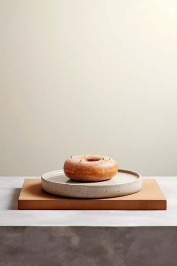
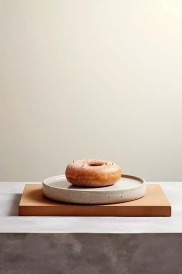

About Us
The name derived from french it means crescent or crescent of the moon. The origin of the croissant can actually be traced back to 13th century Austria, where it was called the kipferl, the German word for crescent.
The name derived from french it means crescent or crescent of the moon. The origin of the croissant can actually be traced back to 13th century Austria, where it was called the kipferl, the German word for crescent.
 
